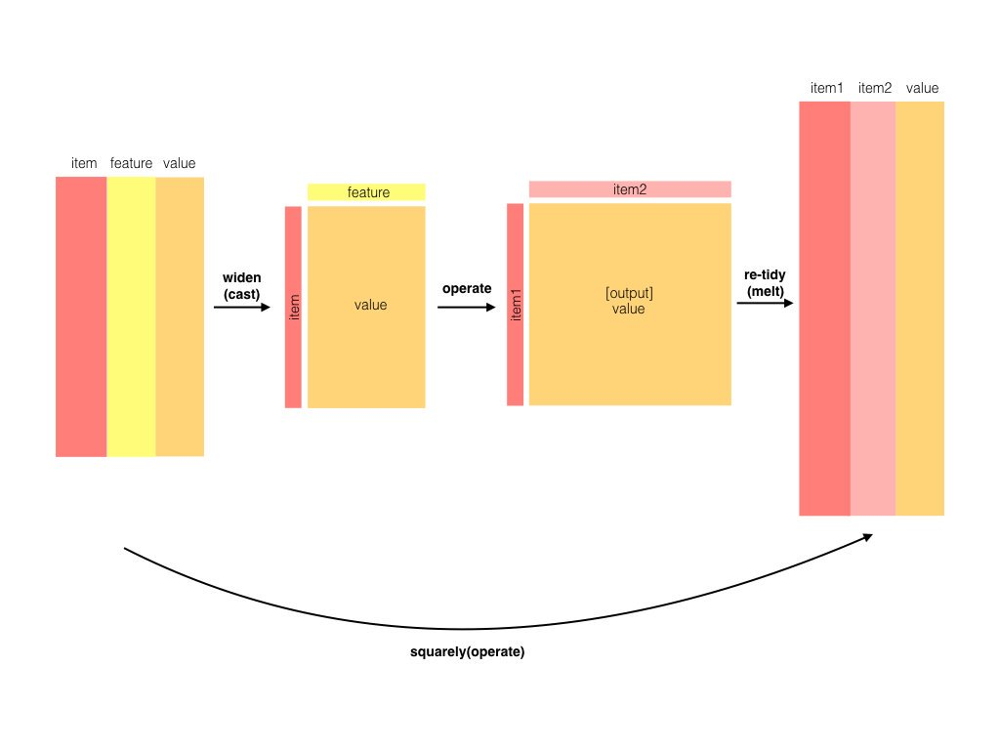

library(tidyverse)
library(easystats) # Komfort für deskriptive Statistiken, wie `describe_distribution`
library(tidytext)
library(hcandersenr) # Textdaten
library(slider) # slide
library(widyr) # pairwise_pmi
library(furrr) # mehrere Kerne gleichzeitig nutzen
library(textdata) # Worteinbettungen, vorgekocht
library(entropy) # Entropie berechnen
library(widyr) # Ähnlichkeit berechnen mit widyr_svd
library(furrr) # Mehrere Kerne gleichzeitig5 Word Embedding
 Bild von mcmurryjulie auf Pixabay
Bild von mcmurryjulie auf Pixabay
5.1 Vorab
5.1.1 Lernziele
- Die grundlegenden Konzepte der Informationstheorie erklären können
- Die vorgestellten Techniken des Textminings mit R anwenden können
5.1.2 Vorbereitung
- Lesen Sie diesen Text als Vorbereitung
- Arbeiten Sie Hvitfeldt und Silge (2022), Kap. 5 durch.
5.1.3 Benötigte R-Pakete
5.2 Informationstheorie
5.2.1 Einführung
Die Informationstheorie ist eine der Sternstunden der Wissenschaft. Manche sagen dass Claude Shannon, der Autor der Theorie, auf einer Stufe mit Darwin und Einstein stehen sollte:
In this single paper, Shannon introduced this new fundamental theory. He raised the right questions, which no one else even thought of asking. This would have been enough to make this contribution earthshaking. But amazingly enough, Shannon also provided most of the right answers with class and elegance. In comparison, it took decades for a dozen of top physicists to define the basics of quantum theory. Meanwhile, Shannon constructed something equivalent, all by himself, in a single paper. Shannon’s theory has since transformed the world like no other ever had, from information technologies to telecommunications, from theoretical physics to economical globalization, from everyday life to philosophy. (…) I don’t think Shannon has had the credits he deserves. He should be right up there, near Darwin and Einstein, among the few greatest scientists mankind has ever had the chance to have.
Für die Statistik ist die Informationstheorie von hoher Bedeutung. Im Folgenden schauen wir uns einige Grundlagen an.
5.2.2 Wozu ist das gut?
Bevor man sich mit einem Thema wie der Informationtheorie (Informationsentropie mit verwandten Konstrukten oder kurz Entropie) beschäftigt, sollte die Frage geklärt sein, wozu das Thema gut ist. Hier sind drei Antworten dazu:
- Im Maschinenlernen wird die Informationtheorie verwendet, um die Güte von Klassifikationsmodellen zu berechnen.
- Speziell im Textmining wird die Entropie verwendet, um den Zusammenhang von Wörtern zu quantifizieren.
- Wenige Theorien haben so viel neue Forschung initiert, wie Shannon (1948) berühmtes Paper. Es ist also auf jeden Fall eine Perle der Geistesgeschichte.
5.2.3 Shannon-Information
Mit der Shannon-Information (Information, Selbstinformation) quantifizieren wir, wie viel “Überraschung” sich in einem Ereignis verbirgt (Shannon 1948).
Ein Ereignis mit …
- geringer Wahrscheinlichkeit: Viel Überraschung (Information)
- hoher Wahrscheinlichkeit: Wenig Überraschung (Information)
Wenn wir also erfahren, dass ein unwahrscheinliches Ereignis eingetreten ist (Schnee im Sommer), sind wir überraschter als wenn wir höhen, dass ein wahrscheinliches Ereignis eingetreten ist (Schnee im Winter).
Die Information eines Ereignis ist also eng verbunden mit seiner Wahrscheinlichkeit oder auch mit den Odds eines Ereignisses.
Die Shannon-Information ist die einzige Größe, die einige wünschenswerte Anforderungen1 erfüllt:
- Stetig
- Je mehr Ereignisse in einem Zufallsexperiment möglich sind, desto höher die Information, wenn ein bestimmtes Ereignis eintritt
- Additiv: Die Summe der Information zweier Teilereignisse ist gleich der Information des Gesamtereignis
Definition 5.1 (Shannon-Information) Die Information ist so definiert:
\[I(x) = - \log_2 \left( Pr(x) \right)\]
Andere Logaritmusbasen sind möglich. Bei einem binären Logarithmus nennt man die Einheit Bit2.
Ein Münwzurf3 hat 1 Bit Information:
-log(1/2, base = 2)[1] 1Damit gilt: \(I = \frac{1}{Pr(x)}\)
Die Information ist eng verwandt mit den Odds bzw. Log-Odds (Logits):
\(\text{log-odds}(x)=\log \left({\frac {p(x)}{p(\lnot x)}}\right)\)
Logits können als Differenz zweier Shannon-Infos ausgedrückt werden:
\(\text{log-odds}(x)=I(\lnot x)-I(x)\)
Die Information zweier unabhängiger Ereignisse ist additiv.
Die gemeinsame Wahrscheinlichkeit zweier unabhängiger Ereignisse ist das Produkt der einzelnen Wahrscheinlichkeiten:
\(Pr(x,y) = Pr(x) \cdot Pr(y)\)
Die gemeinsame Information ist dann
\[ {\displaystyle {\begin{aligned}\operatorname {I}(x,y)&=-\log _{2}\left[p(x,y)\right]=-\log _{2}\left[p(x)p(y)\right]\\[5pt]&=-\log _{2}\left[p{(x)}\right]-\log _{2}\left[p{(y)}\right]\\[5pt]&=\operatorname {I} (x)+\operatorname {I} (y)\end{aligned}}} \]
Beispiel 5.1 (Information eines wahrscheinlichen Ereignisses) Die Information eines fast sicheren Ereignisses ist gering.
-log(99/100, base = 2)[1] 0.01449957Beispiel 5.2 (Information eines unwahrscheinlichen Ereignisses) Die Information eines unwahrscheinlichen Ereignisses ist hoch.
-log(01/100, base = 2)[1] 6.643856Beispiel 5.3 (Information eines Würfelwurfs) Die Wahrscheinlichkeitsfunktion eines Würfel ist
\({\displaystyle Pr(k)={\begin{cases}{\frac {1}{6}},&k\in \{1,2,3,4,5,6\}\\0,&{\text{ansonsten}}\end{cases}}}\)
Die Wahrscheinlichkeit, eine 6 zu würfeln, ist \(Pr(X=6) = \frac{1}{6}\).
Die Information von \(X=6\) beträgt also
\(I(X=6) = -\log_2 \left( Pr(X=6) \right) = -\log_2(1/6) \approx 2.585 \, \text{bits}\).
-log(1/6, base = 2)[1] 2.584963Beispiel 5.4 (Information zweier Würfelwurfe) Die Wahrscheinlichkeit, mit zwei Würfeln, \(X\) und \(Y\), jeweils 6 zu würfeln, beträgt \(Pr(X=6, Y=6) = \frac{1}{36}\)
Die Information beträgt also
\(I(X=6, Y=6) = -\log_2 \left( Pr(6,6) \right)\)
-log(1/36, base = 2)[1] 5.169925Aufgrund der Additivität der Information gilt
\(I(6,6) = I(6) + I(6)\)
-log(1/6, base = 2) + -log(1/6, base = 2)[1] 5.1699255.2.4 Entropie
(Informations)entropie ist die Summe der Informationen der Ereignisse einer Zufallsvariablen, \(X\).
Definition 5.2 (Informationsentropie) Informationsentropie ist so definiert:
\[H(p) = - \text{E log} (p_i) = - \sum_{i = 1}^n p_i \text{log} (p_i) = E\left[I(X) \right]\]
Die Informationsentropie ist also die “mittlere” oder “erwartete Information einer Zufallsvariablen.
Die Entropie eines Münzwurf-Versuchs (Bernoulli-Experiment) ist dann maximal (1 bit), wenn die Trefferwahrscheinlichkeit 50% beträgt: \(Pr(X=x) = 1/2\), s. Abb. Abbildung 5.1.

5.2.5 Gemeinsame Information
Die gemeinsame Information (mutual information, MI) zweier Zufallsvariablen \(X\) und \(Y\), \(I(X,Y)\), quantifiziert die Informationsmenge, die man über \(Y\) erhält, wenn man \(X\) beobachtet. Mit anderen Worten: Die MI ist ein Maß des Zusammenhangs zweier (nominaler) Variablen. Im Gegensatz zur Korrelation ist die MI nicht auf lineare Abhängigkeiten beschränkt.
Die MI quantifiziert den Unterschied zwischen der gemeinsamen Verteilung \(Pr(X,Y)\) und dem Produkt einer einzelnen4 Wahrscheinlichkeitsverteilungen, d.h. \(Pr(X)\) und \(Pr(Y)\).
Wenn die beiden Variablen (stochastisch) unabhängig5 sind, ist ihre gemeinsame Information Null:
\(I(X,Y) = 0 \quad \text{gdw} \quad \bot(X,Y)\).
Dann gilt nämlich:
\(\log \left( \frac{Pr(X,Y)} {Pr(X) \cdot Pr(Y)} \right) =\log(1) = 0\).
Das macht intuitiv Sinn: Sind zwei Variablen unabhängig, so erfährt man nichts über die zweite, wenn man die erste kennt. So ist Kenntnis der Sternzeichens einer Person und ihrer Körpergröße unabhängig.
Das Gegenteil ist auch wahr: Sind zwei Variablen voneinander komplett abhängig, so weiß man alles über die zweite, wenn man die erste kennt.
Die gemeinsame Information kann man sich als Summe der einzelnen gemeinsamen Informationen von \(XY\) sehen (s. Tabelle 5.1):
d <- tibble::tribble(
~x1, ~x2, ~x3,
"x1y2", "x2y1", "x3y1",
"x2y1", "x2y2", "x3y2",
"x1y3", "x2y3", "x3y3"
)
d| x1 | x2 | x3 |
|---|---|---|
| x1y2 | x2y1 | x3y1 |
| x2y1 | x2y2 | x3y2 |
| x1y3 | x2y3 | x3y3 |
\(I(X,Y) = \Sigma_Y \Sigma_y Pr(x,y) \underbrace{\log \left( \frac{Pr(X,Y)}{Pr(X) Pr(Y)} \right)}_\text{punktweise MI}\)
Die Summanden der gemeinsamen Information bezeichnet man auch als punktweise gemeinsame Information (pointwise mutual information, PMI), entsprechend, s. Gleichung 5.1. MI ist also der Erwartungswert der PMI.
\[{\displaystyle \operatorname {PMI} (x,y)\equiv \log_{2}{\frac {p(x,y)}{p(x)p(y)}}=\log _{2}{\frac {p(x|y)}{p(x)}}=\log _{2}{\frac {p(y|x)}{p(y)}}} \tag{5.1}\]
Andere Basen als log2 sind gebräuchlich, vor allem der natürliche Logarithmus.
Anmerkung. Die zwei rechten Umformungen in Gleichung 5.1 basieren auf der Umformung der gemeinsamen Wahrscheinlichkeit.
Zur Erinnerung: \(p(x,y) = p(y)p(x|y) = p(x)p(y|x)\)
Beispiel 5.5 (Interpretation der PMI) Sei \(p(x) = p(y) = 1/10\) und \(p(x,y) = 1/10\). Wären \(x\) und \(y\) unabhängig, dann wäre \(p^{\prime}(x,y) = p(x)p(y) = 1/100\). Das Verhältnis der Produkte der einzelnen Wahrscheinlichkeit zur gemeinsamen Wahrscheinlichkeit wäre dann 1 und der Logarithmus von 1 ist 0. Das Verhältnis von 1 entspricht also der Unabhängigkeit. Ist das Verhältnis z.B. 5, so zeigt das eine gewisse Abhängigkeit an. Im obigen Beispiel gilt: \(\frac{1/20}{1/100}=5\).
Die MI wird auch über die sog. Kullback-Leibler-Divergenz definiert, die die Differenz zwischen gemeinsamer Wahrscheinlichkeitsfunktion bzw. -dichte und dem Produkt der jeweiligen Randwahrscheinlichkeiten bzw. -dichte angibt.
5.2.6 Maximumentropie
Definition 5.3 (Maximumentropie) Die Verteilungsform, für die es die meisten Möglichkeiten (Pfade im Baumdiagramm) gibt, hat die höchste Informationsentropie.
Abbildung 5.2 zeigt ein Baumdiagramm für einen 3-fachen Münzwurf. In den “Blättern” (Endknoten) sind die Ergebnisse des Experiments dargestellt sowie die Zufallsvariable \(X\), die die Anzahl der “Treffer” (Kopf) fasst. Wie man sieht, vereinen einige Werte der Zufallsvariable mehr Pfade auf sich als andere: Der Wert \(X=1\) vereinigt 3 Pfade (von 8) auf sich; der Wert \(X=3\) nur 1 Pfad.

5.2.7 Ilustration
Sagen wir, Sie stehen vor 5 Eimern und haben 10 Kieselsteine bei sich, die mit den Nummern 1 bis 10 beschriftet sind (McElreath 2020). Weil Sie nichts besseres zu tun haben, werfen Sie die Kiesel in die Eimer und zwar so, dass die Wahrscheinlichkeit für einen Kiesel in einen bestimmten Eimer zu landen für alle Eimer gleich ist. Sie werfen also Ihre 10 Kiesel und betrachten das Ergebnis; die Kiesel sind jetzt in einem bestimmten (zufälligen) Arrangement auf die Eimer verteilt. Jede Aufteilung (der 10 Kiesel in den 5 Eimern) ist gleich wahrscheinlich6 – die Wahrscheinlichkeit, dass alle 10 Kiesel in Eimer 1 landen ist also gleich hoch wie die Wahrscheinlichkeit, dass jeder Eimer einen Kiesel abkriegt. Jetzt kommt’s: Manche Arrangements können auf mehrere Arten erzielt werden als andere. So gibt es nur eine Aufteilung für alle 10 Kiesel in einem Eimer (Teildiagramm a, in Abbildung 5.3). Aber es gibt 90 Möglichkeiten, die Kiesel so aufzuteilen, dass 2 in Eimer 2 landen, 8 in Eimer 4 und 2 in Eimer 4, s. Teildiagramm b in Abbildung 5.3. Teildiagramme c bis e zeigen, dass die Anzahl der Aufteilungen schnell astronomisch hoch wird, wenn sich die Kiesel “gleichmäßiger” auf die Eimer verteilen. Die gleichmäßigste Aufteilung (Diagramm e) hat die größte Zahl an möglichen Anordnungen. Eine Aufteilung der Kiesel auch als Pfad durch ein Baumdiagramm beschrieben werden.
Hier sind ein paar verschiedene Arrangements, deren Anzahl von Aufteilungen wir hier anschauen, s. Tabelle 5.2:
d <-
tibble(a = c(0, 0, 10, 0, 0),
b = c(0, 1, 8, 1, 0),
c = c(0, 2, 6, 2, 0),
d = c(1, 2, 4, 2, 1),
e = 2)
d| a | b | c | d | e |
|---|---|---|---|---|
| 0 | 0 | 0 | 1 | 2 |
| 0 | 1 | 2 | 2 | 2 |
| 10 | 8 | 6 | 4 | 2 |
| 0 | 1 | 2 | 2 | 2 |
| 0 | 0 | 0 | 1 | 2 |

Hier sind die Wahrscheinlichkeitsverteilungen der 5 Arrangements7:
d %>%
mutate_all(~. / sum(.))| a | b | c | d | e |
|---|---|---|---|---|
| 0 | 0.0 | 0.0 | 0.1 | 0.2 |
| 0 | 0.1 | 0.2 | 0.2 | 0.2 |
| 1 | 0.8 | 0.6 | 0.4 | 0.2 |
| 0 | 0.1 | 0.2 | 0.2 | 0.2 |
| 0 | 0.0 | 0.0 | 0.1 | 0.2 |
Dann kann man die Wahrscheinlichkeit einfach in Entropie umrechnen8:
d %>%
mutate_all(~ . / sum(.)) %>%
gather() %>%
group_by(key) %>%
summarise(h = -sum(ifelse(value == 0, 0, value * log(value))))| key | h |
|---|---|
| a | 0.0000000 |
| b | 0.6390319 |
| c | 0.9502705 |
| d | 1.4708085 |
| e | 1.6094379 |
Das ifelse dient nur dazu, eine Wahrscheinlichkeit von 0 eine Entropie von 0 zu verpassen9, denn sonst würden wir ein Problem rennen, wenn wir \(log(0)\) ausrechnen.
log(0)[1] -Inf5.3 Zufallstext erkennen
5.3.1 Entropie von Zufallstext
Kann man wohl Zufallstext maschinell erkennen? Sicher gibt es viele Ansätze, um das Problem anzugehen. Lassen Sie uns einen Ansatz erforschen. Erforschen heißt, wir erforschen für uns, es handelt sich um eine didaktische Übung, das Ziel ist nicht, Neuland für die Menschheit zu betreten.
Aber zuerst müssen wir überlegen, was “Zufallstext” bedeuten soll.
Nehmen wir uns dazu zuerst einen richtigen Text, ein Märchen von H.C. Andersen zum Beispiel. Nehmen wir das Erste aus der Liste in dem Tibble hcandersen_de, “das Feuerzeug”.
das_feuerzeug <-
hcandersen_de %>%
filter(book == "Das Feuerzeug") %>%
unnest_tokens(input = text, output = word) %>%
pull(word)
head(das_feuerzeug)[1] "es" "kam" "ein" "soldat" "die"
[6] "landstraße"Das Märchen ist 2688 Wörter lang.
wortliste <-
hcandersen_de %>%
filter(book == "Das Feuerzeug") %>%
unnest_tokens(output = word, input = text) %>%
pull(word) %>%
unique()
head(wortliste)[1] "es" "kam" "ein" "soldat" "die"
[6] "landstraße"Jetzt ziehen wir Stichproben (mit Zurücklegen) aus dieser Liste und erstellen damit eine Art Zufallstext.
zufallstext <-
sample(x = wortliste, size = length(das_feuerzeug)*10^2, replace = TRUE)
head(zufallstext)[1] "hat" "kreide" "ins" "komme" "seinen" "dort" Zählen wir, wie häufig jedes Wort vorkommt:
zufallstext_count <-
tibble(zufallstext = zufallstext) %>%
count(zufallstext)
head(zufallstext_count)| zufallstext | n |
|---|---|
| ab | 356 |
| abend | 386 |
| aber | 347 |
| abflog | 350 |
| abschlagen | 388 |
| acht | 379 |
Der Häufigkeitsvektor von wortliste besteht nur aus Einsen, so haben wir ja gerade die Wortliste definiert:
wortliste_count <-
tibble(wortliste = wortliste) %>%
count(wortliste)
head(wortliste_count)| wortliste | n |
|---|---|
| ab | 1 |
| abend | 1 |
| aber | 1 |
| abflog | 1 |
| abschlagen | 1 |
| acht | 1 |
Daher ist ihre Informationsentropy maximal.
entropy(wortliste_count$n, unit = "log2")[1] 9.47978Die Häufigkeiten der Wörter in zufallstext hat eine hohe Entropie.
entropy(zufallstext_count$n, unit = "log2")[1] 9.47792Zählen wir die Häufigkeiten in der Geschichte “Das Feuerzeug”.
das_feuerzeug_count <-
tibble(text = das_feuerzeug) %>%
count(text)
head(das_feuerzeug_count)| text | n |
|---|---|
| ab | 2 |
| abend | 3 |
| aber | 21 |
| abflog | 1 |
| abschlagen | 1 |
| acht | 1 |
Und berechnen dann die Entropie:
entropy(das_feuerzeug_count$n, unit = "log2")[1] 8.075194Der Zufallstext hat also eine höhere Entropie als der echte Märchentext. Der Zufallstext ist also gleichverteilter in den Worthäufigkeiten.
Pro Bit weniger Entropie halbiert sich die Anzahl der Möglichkeiten einer Häufigkeitsverteilung.
5.3.2 MI von Zufallstext
Left as an exercises for the reader10 🥳.
5.4 Daten
5.4.1 Complaints-Datensatz
Der Datensatz complaints stammt aus dieser Quelle.
Den Datensatz complaints kann man hier herunterladen. Im Buch ist die Webseite nicht (direkt?) angegeben. Die Datei ist mit gz gepackt; read_csv sollte das automatisch entpacken. Achtung: Die Datei ist recht groß.
d_path <- "https://github.com/EmilHvitfeldt/smltar/raw/master/data/complaints.csv.gz"
complaints <- read_csv(d_path)Geschickter als jedes Mal die Datei herunterzuladen, ist es, sie einmal herunterzuladen, und dann lokal zu speichern, etwa im Unterordner data des RStudio-Projektordners.
Nach dem Importieren wird der Datensatz in eine Tidy-Form gebracht (mit unnest_tokens) und dann verschachtelt, mit nest.
5.4.2 Complaints verkürzt und geschachtelt
Um ein Herumprobieren zu erleichtern, ist hier der Datensatz complaints in zwei verkürzten Formen bereitgestellt:
nested_words2_path <- "https://github.com/sebastiansauer/datascience-text/raw/main/data/nested_words2.rds"
nested_words3_path <- "https://github.com/sebastiansauer/datascience-text/raw/main/data/nested_words3.rds"nested_words2 enthält die ersten 10% des Datensatz nested_wordsund ist gut 4 MB groß (mit gz gezippt); er besteht aus ca. 11 Tausend Beschwerden. nested_words3 enthält nur die ersten 10 Beschwerden, was ihn gut zum Handhaben macht.
Beide sind verschachtelt und aus tidy_complaints (s. Kap. 5.1) hervorgegangen.
nested_words3 <- read_rds(nested_words3_path)Das sieht dann so aus:
nested_words3 %>%
head(3)| complaint_id | words |
|---|---|
| 3384392 | systems , inc , is , trying , to , collect , a , debt , that , is , not , mine , not , owed , and , is , inaccurate |
| 3417821 | i , would , like , to , request , the , of , the , following , items , from , my , credit , report , which , are , the , result , of , my , victim , to , identity , theft , this , information , does , not , to , transactions , that , i , have , made , accounts , that , i , have , opened , as , the , attached , supporting , documentation, can , as , such , it , should , be , blocked , from , on , my , credit , report , pursuant , to , section , of , the , fair , credit , reporting , act |
| 3433198 | over , the , past , 2 , weeks , i , have , been , receiving , amounts , of , telephone , calls , from , the , company , listed , in , this , complaint , the , calls , between , xxxx , xxxx , and , xxxx , xxxx , to , my , cell , and , at , my , job , the , company , does , not , have , the , right , to , me , at , work , and , i , want , this , to , stop , it , is , extremely , to , be , told , 5 , times , a , day , that , i , have , a , call , from , this , collection, agency , while , at , work |
Werfen wir einen Blick in den TExt der ersten Beschwerde des Datensatzes mit der ID nested_words3_path$complaint_id[1].
beschwerde1_text <- nested_words3$words[[1]]Das ist ein Tibble mit einer Spalte und 17 Wörtern; da wir schon auf Unigramme aufgeteilt haben, ist jedes Wort ein Element des Vektors word:
beschwerde1_text %>%
head()| word |
|---|
| systems |
| inc |
| is |
| trying |
| to |
| collect |
beschwerde1_text$word [1] "systems" "inc" "is" "trying" "to"
[6] "collect" "a" "debt" "that" "is"
[11] "not" "mine" "not" "owed" "and"
[16] "is" "inaccurate"5.5 Wordembeddings selber erstellen
5.5.1 PMI berechnen
Rufen Sie sich die Definition der PMI ins Gedächtnis, s. Gleichung 5.1.
Mit R kann man die PMI z.B. so berechnen, s. ? pairwise_pmi aus dem Paket {widyr}.
Zum Paket widyr von Robinson und Silge:
This package wraps the pattern of un-tidying data into a wide matrix, performing some processing, then turning it back into a tidy form. This is useful for several mathematical operations such as co-occurrence counts, correlations, or clustering that are best done on a wide matrix.
Erzeugen wir uns Dummy-Daten:
dat <- tibble(feature = rep(1:5, each = 2),
item = c("a", "b",
"a", "c",
"a", "c",
"b", "e",
"b", "f"))
dat| feature | item |
|---|---|
| 1 | a |
| 1 | b |
| 2 | a |
| 2 | c |
| 3 | a |
| 3 | c |
| 4 | b |
| 4 | e |
| 5 | b |
| 5 | f |
Aus der Hilfe der Funktion:
Find pointwise mutual information of pairs of items in a column, based on a “feature” column that links them together. This is an example of the spread-operate-retidy pattern.
Die Argumente der Funktion sind:
item
Item to compare; will end up in item1 and item2 columns
feature
Column describing the feature that links one item to others
Manche Berechnungen (Operationen) lassen sich vielleicht leichter nicht in der Tidy-Form (Langform), sondern in der “breiten” oder Matrixform ausführen. Wandeln wir mal dat von der Langform in die Breitform um:
table(dat$item, dat$feature)
1 2 3 4 5
a 1 1 1 0 0
b 1 0 0 1 1
c 0 1 1 0 0
e 0 0 0 1 0
f 0 0 0 0 1Silge und Robinson verdeutlichen das Prinzip von widyr so, s. Abbildung 5.4.

(Vgl. auch die Erklärung hier.)
Bauen wir das mal von Hand nach.
Randwahrscheinlichkeiten von a und c sowie deren Produkt, p_a_p_c:
p_a <- 3/5
p_c <- 2/5
p_a_p_c <- p_a * p_c
p_a_p_c[1] 0.24Gemeinsame Wahrscheinlichkeit von a und c:
p_ac <- 2/5PMI von Hand berechnet:
log(p_ac/p_a_p_c)[1] 0.5108256Man beachte, dass hier als Basis \(e\), der natürliche Logarithmus, verwendet wurde (nicht 2).
Jetzt berechnen wir die PMI mit pairwise_pmi.
pairwise_pmi(dat, item = item, feature = feature)| item1 | item2 | pmi |
|---|---|---|
| b | a | -0.5877867 |
| c | a | 0.5108256 |
| a | b | -0.5877867 |
| e | b | 0.5108256 |
| f | b | 0.5108256 |
| a | c | 0.5108256 |
| b | e | 0.5108256 |
| b | f | 0.5108256 |
Wie man sieht, entspricht unserer Berechnung von Hand der Berechnung mit pairwise_pmi.
5.5.2 Sliding
Sliding ist ein interessantes Konzept, aber man braucht vielleicht etwas Zeit, um sein Hirn um das Konzept zu wickeln…
Hier eine Illustration:
txt_vec <- "Das ist ein Test, von dem nicht viel zu erwarten ist"
slider::slide(txt_vec, ~ .x, .before = 2)[[1]]
[1] "Das ist ein Test, von dem nicht viel zu erwarten ist"Oh, da passiert nichts?! Kaputt? Nein, wir müssen jedes Wort als ein Element des Vektors auffassen.
txt_df <-
tibble(txt = txt_vec) %>%
unnest_tokens(input = txt, output = word)
head(txt_df)| word |
|---|
| das |
| ist |
| ein |
| test |
| von |
| dem |
slider::slide(txt_df$word, ~ .x, .before = 2)[[1]]
[1] "das"
[[2]]
[1] "das" "ist"
[[3]]
[1] "das" "ist" "ein"
[[4]]
[1] "ist" "ein" "test"
[[5]]
[1] "ein" "test" "von"
[[6]]
[1] "test" "von" "dem"
[[7]]
[1] "von" "dem" "nicht"
[[8]]
[1] "dem" "nicht" "viel"
[[9]]
[1] "nicht" "viel" "zu"
[[10]]
[1] "viel" "zu" "erwarten"
[[11]]
[1] "zu" "erwarten" "ist" Ah!
Das Aufteilen in einzelne Wörter pro Element des Vektors könnte man auch so erreichen:
txt_vec2 <- str_split(txt_vec, pattern = boundary("word")) %>%
simplify()
slide(txt_vec2, .f = ~.x, .before = 2)Shifting non-numeric variables is not possible.
Try using 'to_numeric()' and specify the 'lowest' argument. [1] "Das" "ist" "ein" "Test" "von" "dem"
[7] "nicht" "viel" "zu" "erwarten" "ist" In unserem Beispiel mit den Beschwerden:
slide(beschwerde1_text$word, ~.x, .before = 2)Shifting non-numeric variables is not possible.
Try using 'to_numeric()' and specify the 'lowest' argument. [1] "systems" "inc" "is" "trying" "to"
[6] "collect" "a" "debt" "that" "is"
[11] "not" "mine" "not" "owed" "and"
[16] "is" "inaccurate"5.5.3 Funktion slide_windows
Die Funktion slide_windows im Kapitel 5.2 ist recht kompliziert. In solchen Fällen ist es hilfreich, sich jeden Schritt einzeln ausführen zu lassen. Das machen wir jetzt mal.
Hier ist die Syntax der Funktion slide_windows:
slide_windows <- function(tbl, window_size) {
skipgrams <- slider::slide(
tbl,
~.x, # Syntax ähnlich zu purrr::map()
.after = window_size - 1,
.step = 1,
.complete = TRUE
)
safe_mutate <- safely(mutate)
out <- map2(skipgrams,
1:length(skipgrams),
~ safe_mutate(.x, window_id = .y))
out %>%
transpose() %>%
pluck("result") %>%
compact() %>%
bind_rows()
}Erschwerend kommt eine große Datenmenge und eine lange Berechnungszeit dazu, was das Debuggen (Nachvollziehen und Durchdenken) der Schritte zusätzlich erschwert. In solchen Fällen hilft die goldene Regel: Mach es dir so einfach wie möglich (aber nicht einfacher). Wir nutzen also den stark verkleinerten Datensatz nested_words3, den wir oben importiert haben.
Zuerst erlauben wir mal, dasss unsere R-Session mehrere Kerne benutzen darf.
plan(multisession) ## for parallel processingDie Funktion slide_windows ist recht kompliziert. Es hilft oft, sich mit debug(fun) eine Funktion Schritt für Schritt anzuschauen.
Gehen wir Schritt für Schritt durch die Syntax von slide_windows.
Werfen wir einen Blick in words, erstes Element (ein Tibble mit einer Spalte). Denn die einzelnen Elemente vonwordswerden an die Funktionslide_windows` als “Futter” übergeben.
futter1 <- nested_words3[["words"]][[1]]
futter1| word |
|---|
| systems |
| inc |
| is |
| trying |
| to |
| collect |
| a |
| debt |
| that |
| is |
| not |
| mine |
| not |
| owed |
| and |
| is |
| inaccurate |
Das ist der Text der ersten Beschwerde.
Okay, also dann geht’s los durch die einzelnen Schritte der Funktion slide_windows.
Zunächst holen wir uns die “Fenster” oder “Skipgrams”:
skipgrams1 <- slider::slide(
futter1,
~.x,
.after = 3,
.step = 1,
.complete = TRUE
)Bei slide(tbl, ~.x) geben wir die Funktion an, die auf tbl angewendet werden soll. Daher auch die Tilde, die uns von purrr::map() her bekannt ist. In unserem Fall wollen wir nur die Elemente auslesen; Elemente auslesen erreicht man, in dem man sie mit Namen anspricht, in diesem Fall mit dem Platzhalter .x.
Jedes Element von skipgrams1 ist ein 4*1-Tibble und ist ein Skripgram.
skipgrams1 %>% str()List of 17
$ : tibble [4 × 1] (S3: tbl_df/tbl/data.frame)
..$ word: chr [1:4] "systems" "inc" "is" "trying"
$ : tibble [4 × 1] (S3: tbl_df/tbl/data.frame)
..$ word: chr [1:4] "inc" "is" "trying" "to"
$ : tibble [4 × 1] (S3: tbl_df/tbl/data.frame)
..$ word: chr [1:4] "is" "trying" "to" "collect"
$ : tibble [4 × 1] (S3: tbl_df/tbl/data.frame)
..$ word: chr [1:4] "trying" "to" "collect" "a"
$ : tibble [4 × 1] (S3: tbl_df/tbl/data.frame)
..$ word: chr [1:4] "to" "collect" "a" "debt"
$ : tibble [4 × 1] (S3: tbl_df/tbl/data.frame)
..$ word: chr [1:4] "collect" "a" "debt" "that"
$ : tibble [4 × 1] (S3: tbl_df/tbl/data.frame)
..$ word: chr [1:4] "a" "debt" "that" "is"
$ : tibble [4 × 1] (S3: tbl_df/tbl/data.frame)
..$ word: chr [1:4] "debt" "that" "is" "not"
$ : tibble [4 × 1] (S3: tbl_df/tbl/data.frame)
..$ word: chr [1:4] "that" "is" "not" "mine"
$ : tibble [4 × 1] (S3: tbl_df/tbl/data.frame)
..$ word: chr [1:4] "is" "not" "mine" "not"
$ : tibble [4 × 1] (S3: tbl_df/tbl/data.frame)
..$ word: chr [1:4] "not" "mine" "not" "owed"
$ : tibble [4 × 1] (S3: tbl_df/tbl/data.frame)
..$ word: chr [1:4] "mine" "not" "owed" "and"
$ : tibble [4 × 1] (S3: tbl_df/tbl/data.frame)
..$ word: chr [1:4] "not" "owed" "and" "is"
$ : tibble [4 × 1] (S3: tbl_df/tbl/data.frame)
..$ word: chr [1:4] "owed" "and" "is" "inaccurate"
$ : NULL
$ : NULL
$ : NULLDas zweite Skipgram von skipgrams1 enthält, naja, das zweite Skipgram.
skipgrams1[[2]] %>% str()tibble [4 × 1] (S3: tbl_df/tbl/data.frame)
$ word: chr [1:4] "inc" "is" "trying" "to"Und so weiter.
Okay, weiter im Programm. Jetzt mappen wir das Erstellen der Skipgrams
safe_mutate <- safely(mutate)
out1 <- map2(skipgrams1,
1:length(skipgrams1),
~ safe_mutate(.x, window_id = .y))
out1 %>%
head(2) %>%
str()List of 2
$ :List of 2
..$ result: tibble [4 × 2] (S3: tbl_df/tbl/data.frame)
.. ..$ word : chr [1:4] "systems" "inc" "is" "trying"
.. ..$ window_id: int [1:4] 1 1 1 1
..$ error : NULL
$ :List of 2
..$ result: tibble [4 × 2] (S3: tbl_df/tbl/data.frame)
.. ..$ word : chr [1:4] "inc" "is" "trying" "to"
.. ..$ window_id: int [1:4] 2 2 2 2
..$ error : NULLout1 ist eine Liste mit 17 Elementen; jedes Element mit jeweils zwei Elementen: Den Ergebnissen und ob es einen Fehler gab bei safe_mutate. Die 10 Elemente entsprechen den 10 Skipgrams. Wir können aber out1 auch “drehen”, transponieren genauer gesagt. so dass wir eine Liste mit zwei Elementen bekommen: das erste Element hat die (zehn) Ergebnisse (nämlich die Skipgrams) und das zweite Elemente, ob es Fehler gab.
Das Prinzip des Transponierens ist in Abbildung 5.5 dargestellt.

out2 <-
out1 %>%
transpose() Puh, das ist schon anstrengendes Datenyoga…
Aber jetzt ist es einfach. Wir ziehen das erste der beiden Elemente, die Ergebnisse heraus (pluck), entfernen leere Elemente (compact) und machen einen Tibble daraus (bind_rows):
out2 %>%
pluck("result") %>%
compact() %>%
bind_rows() %>%
head()| word | window_id |
|---|---|
| systems | 1 |
| inc | 1 |
| is | 1 |
| trying | 1 |
| inc | 2 |
| is | 2 |
Geschafft!
5.5.4 Ähnlichkeit berechnen
Nachdem wir jetzt slide_windows kennen, schauen wir uns die nächsten Schritte an:
tidy_pmi1 <- nested_words3 %>% # <--- Kleiner Datensatz!
mutate(words = future_map(words, slide_windows, 4L))Wir werden slide_windows auf die Liste words an, die die Beschwerden enthält. Für jede Beschwerde erstellen wir die Skipgrams; diese Schleife wird realisiert über map bzw. future_map, die uns erlaubt, mehrere Kerne des Rechners gleichzeitig zu nutzen, damit es schneller geht.
Hier sehen wir z.B. die Skipgram-IDs der ersten Beschwerde.
tidy_pmi1[["words"]][[1]] %>%
head()| word | window_id |
|---|---|
| systems | 1 |
| inc | 1 |
| is | 1 |
| trying | 1 |
| inc | 2 |
| is | 2 |
Genestet siehst es so aus:
tidy_pmi1 %>%
head(1)| complaint_id | words |
|---|---|
| 3384392 | systems , inc , is , trying , inc , is , trying , to , is , trying , to , collect , trying , to , collect , a , to , collect , a , debt , collect , a , debt , that , a , debt , that , is , debt , that , is , not , that , is , not , mine , is , not , mine , not , not , mine , not , owed , mine , not , owed , and , not , owed , and , is , owed , and , is , inaccurate, 1 , 1 , 1 , 1 , 2 , 2 , 2 , 2 , 3 , 3 , 3 , 3 , 4 , 4 , 4 , 4 , 5 , 5 , 5 , 5 , 6 , 6 , 6 , 6 , 7 , 7 , 7 , 7 , 8 , 8 , 8 , 8 , 9 , 9 , 9 , 9 , 10 , 10 , 10 , 10 , 11 , 11 , 11 , 11 , 12 , 12 , 12 , 12 , 13 , 13 , 13 , 13 , 14 , 14 , 14 , 14 |
Die Listenspalte entschachteln wir mal:
tidy_pmi2 <- tidy_pmi1 %>%
unnest(words) # entschachtele
tidy_pmi2 %>%
head()| complaint_id | word | window_id |
|---|---|---|
| 3384392 | systems | 1 |
| 3384392 | inc | 1 |
| 3384392 | is | 1 |
| 3384392 | trying | 1 |
| 3384392 | inc | 2 |
| 3384392 | is | 2 |
Zum Berechnen der Ähnlichkeit brauchen wir eineindeutige IDs, nach dem Prinzip “1. Skipgram der 1. Beschwerde” etc:
tidy_pmi3 <- tidy_pmi2 %>%
unite(window_id, complaint_id, window_id) # führe Spalten zusammen
tidy_pmi3 %>%
head()| window_id | word |
|---|---|
| 3384392_1 | systems |
| 3384392_1 | inc |
| 3384392_1 | is |
| 3384392_1 | trying |
| 3384392_2 | inc |
| 3384392_2 | is |
Schließlich berechnen wir die Ähnlichkeit mit pairwise_pmi, das hatten wir uns oben schon mal näher angeschaut:
tidy_pmi4 <- tidy_pmi3 %>%
pairwise_pmi(word, window_id) # berechne Ähnlichkeit
tidy_pmi <- tidy_pmi4 # mit dem Objekt arbeiten wir dann weiter
tidy_pmi %>%
head()| item1 | item2 | pmi |
|---|---|---|
| inc | systems | 5.728498 |
| is | systems | 2.838126 |
| trying | systems | 5.035351 |
| systems | inc | 5.728498 |
| is | inc | 2.838126 |
| trying | inc | 5.035351 |
5.5.5 SVD
Die Singulärwertzerlegung (singular value decomposition, SVD) ist ein Verfahren zur Verringerung der Spaltenzahl (Dimension), vergleichbar zur Faktorenanalyse. Zur Anschaulichkeit - und ohne substanziellen Hintergrund - sei folgendes Beispiel genannt: Die Verben “gehen”, “rennen”, “laufen”, “schwimmen”, “fahren”, “rutschen” könnten zu einer gemeinsamen Dimension, etwa “fortbewegen” reduziert werden. Jedes einzelne der eingehenden Verben erhält eine Zahl von 0 bis 1, das die konzeptionelle Nähe des Verbs zur “dahinterliegenden” Dimension (fortbewegen) quantifiziert; die Zahl nennt man auch die “Ladung” des Items (Worts) auf die Dimension. Sagen wir, wir identifizieren 10 Dimensionen. Man erhält dann für jedes unique Wort im Corpus einen Vektor mit den Ladungen auf die Dimensionen. Im genannten Beispiel wäre es ein 10-stelliger Vektor. So wie ein 3-stelliger Vektor die Position einer Biene im Raum beschreibt11, beschreibt hier unser 10-stelliger Vektor die “Position” eines Worts in unserem Einbettungsvektor.
Die Syntax dazu ist dieses Mal einfach:
tidy_word_vectors <-
tidy_pmi %>%
widely_svd(
item1, item2, pmi,
nv = 100
)
tidy_word_vectors %>%
(head)| item1 | dimension | value |
|---|---|---|
| inc | 1 | -0.0378963 |
| is | 1 | -0.1132069 |
| trying | 1 | -0.0512764 |
| systems | 1 | -0.0333332 |
| to | 1 | -0.1203434 |
| collect | 1 | -0.0554211 |
Mit nv = 100 haben wir die Anzahl (n) der Dimensionen (Variablen, v) auf 100 bestimmt.
5.5.6 Wortähnlichkeit
Jetzt, da wir mit der SVD jedes Wort in einem Koordinatensystem verortet haben, können wir die Abstände der Wörter im Koordinatensystem bestimmen. Das geht mit Hilfe des alten Pythagoras, s. Abbildung 5.6. Der Abstand, den man mit Hilfe des Satz des Pythagoras berechnet, nennt man auch euklidische Distanz.

Okay, wir sind in einem Raum mit vielen Dimensionen, was mein Hirn nicht mitmacht, aber der Algebra ist das egal. Pythagoras’ Satz lässt sich genauso anwenden, wenn es mehr als Dimensionen sind.
Die Autoren basteln sich selber eine Funktion in Kap. 5.3, aber der Einfachheit halber nehme ich (erstmal) die entsprechende Funktion aus widyr:
word_neighbors <-
tidy_word_vectors %>%
pairwise_dist(item1, dimension, value)
word_neighbors %>%
head()| item1 | item2 | distance |
|---|---|---|
| is | inc | 1.0220141 |
| trying | inc | 0.9332851 |
| systems | inc | 0.4161215 |
| to | inc | 1.0913872 |
| collect | inc | 0.5221759 |
| a | inc | 1.0309566 |
Schauen wir uns ein Beispiel an. Was sind die Nachbarn von “inaccurate”?
word_neighbors %>%
filter(item1 == "inaccurate") %>%
arrange(distance) %>%
head()| item1 | item2 | distance |
|---|---|---|
| inaccurate | mine | 0.5248868 |
| inaccurate | score | 0.5310116 |
| inaccurate | oh | 0.5400913 |
| inaccurate | ny | 0.5400913 |
| inaccurate | dob | 0.5801281 |
| inaccurate | cell | 0.6093670 |
Hier ist die Datenmenge zu klein, um vernünftige Schlüsse zu ziehen. Aber “incorrectly”, “correct”, “balance” sind wohl plausible Nachbarn von “inaccurate”.
5.5.7 Cosinus-Ähnlichkeit
Die Nähe zweier Vektoren lässt sich, neben der euklidischen Distanz, auch z.B. über die Cosinus-Ähnlichkeit (Cosine similarity) berechnen, vgl. auch Abbildung 5.7:
{kind=link}
\[{\displaystyle {\text{Cosinus-Ähnlichkeit}}=S_{C}(A,B):=\cos(\theta )={\mathbf {A} \cdot \mathbf {B} \over \|\mathbf {A} \|\|\mathbf {B} \|}={\frac {\sum \limits _{i=1}^{n}{A_{i}B_{i}}}{{\sqrt {\sum \limits _{i=1}^{n}{A_{i}^{2}}}}{\sqrt {\sum \limits _{i=1}^{n}{B_{i}^{2}}}}}},}\]
wobei \(A\) und \(B\) zwei Vektoren sind und \(\|\mathbf {A} \|\) das Skalarprodukt von A (und B genauso). Das Skalarprodukt von \(\color {red} {a = {\displaystyle [a_{1},a_{2},\cdots ,a_{n}]}}\) und \(\color {blue} {b = {\displaystyle [b_{1},b_{2},\cdots ,b_{n}]}}\) ist so definiert:
\[{\displaystyle \mathbf {\color {red}a} \cdot \mathbf {\color {blue}b} =\sum _{i=1}^{n}{\color {red}a}_{i}{\color {blue}b}_{i}={\color {red}a}_{1}{\color {blue}b}_{1}+{\color {red}a}_{2}{\color {blue}b}_{2}+\cdots +{\color {red}a}_{n}{\color {blue}b}_{n}}\]
Entsprechend ist die Funktion nearest_neighbors zu verstehen aus Kap. 5.3:
nearest_neighbors <- function(df, token) {
df %>%
widely(
~ {
y <- .[rep(token, nrow(.)), ]
res <- rowSums(. * y) /
(sqrt(rowSums(. ^ 2)) * sqrt(sum(.[token, ] ^ 2)))
matrix(res, ncol = 1, dimnames = list(x = names(res)))
},
sort = TRUE
)(item1, dimension, value) %>%
select(-item2)
}Wobei mit widely zuerst noch von der Langform in die Breitform umformatiert wird, da die Breitform von der Formel verlangt wird bzw. das Rechnen einfacher macht.
Der eine Vektor ist das Embedding des Tokens, der andere Vektor ist das mittlere Embedding über alle Tokens des Corpus. Wenn die Anzahl der Elemente konstant bleibt, kann man sich das Teilen durch \(n\) schenken, wenn man einen Mittelwert berechnen; so hält es auch die Syntax von nearest_neighbors.
Ein nützlicher Post zur Cosinus-Ähnlichkeit findet sich hier. Dieses Bild zeigt das Konzept der Cosinus-Ähnlichkeit anschaulich.
{kind=link}
Zur Erinnerung: Der Cosinus eines Winkels ist definiert als Verhältnis der Länge der Ankathete (das ist jene Kathete, die einen Schenkel des Winkels bildet) zur Länge der Hypotenuse12 in einem rechtwinkligen, vgl. Abbildung 5.8.

Also: \({\displaystyle \cos \alpha ={\frac {b}{c}}}\)
Quelle: PaterSigmund, Wikipedia,dre CC-BY-SA 2.5
{kind=link}
Hilfreich ist auch die Visualisierung von Sinus und Cosinus am Einheitskreis; gerne animiert betrachten.
{kind=link}
{kind=link}
5.6 Word-Embeddings vorgekocht
5.6.1 Glove6B
In Kap. 5.4 schreiben die Autoren:
If your data set is too small, you typically cannot train reliable word embeddings.
Ein paar Millionen Wörter sollte der Corpus schon enthalten, so die Autoren. Da solche “Worteinbettungen” (word embedings) aufwändig zu erstellen sind, kann man fertige, “vorgekochte” Produkte nutzen.
Glove6B wurde anhand von Wikipedia und anderen Datenquellen erstellt (Pennington, Socher, und Manning 2014).
Hinweis
Die zugehörigen Daten sind recht groß; für glove6b (Pennington, Socher, und Manning 2014) ist fast ein Gigabyte fällig. Sie sollten sich die Daten in einem ruhigen Moment (mit stabiler Internetverbindung) herunterladen und in einem Verzeichnis meiner Wahl abgespeichert (datasets). Da bei mir Download abbrach, als ich embedding_glove6b(dimensions = 100) aufrief, habe ich die Daten manuell heruntergeladen, s.u.
glove6b <-
embedding_glove6b(dir = "~/datasets", dimensions = 50, manual_download = TRUE)
glove6b %>%
select(1:5) %>%
head()| token | d1 | d2 | d3 | d4 |
|---|---|---|---|---|
| the | 0.418000 | 0.249680 | -0.41242 | 0.121700 |
| , | 0.013441 | 0.236820 | -0.16899 | 0.409510 |
| . | 0.151640 | 0.301770 | -0.16763 | 0.176840 |
| of | 0.708530 | 0.570880 | -0.47160 | 0.180480 |
| to | 0.680470 | -0.039263 | 0.30186 | -0.177920 |
| and | 0.268180 | 0.143460 | -0.27877 | 0.016257 |
Die ersten paar Tokens sind:
glove6b$token %>% head(20) [1] "the" "," "." "of" "to" "and" "in" "a" "\"" "'s"
[11] "for" "-" "that" "on" "is" "was" "said" "with" "he" "as" In eine Tidyform bringen:
tidy_glove <-
glove6b %>%
pivot_longer(contains("d"),
names_to = "dimension") %>%
rename(item1 = token)
head(tidy_glove)| item1 | dimension | value |
|---|---|---|
| the | d1 | 0.418000 |
| the | d2 | 0.249680 |
| the | d3 | -0.412420 |
| the | d4 | 0.121700 |
| the | d5 | 0.345270 |
| the | d6 | -0.044457 |
Ganz schön groß:
dim(glove6b)[1] 400000 51object.size(tidy_glove)503834736 bytesIn Megabyte13
object.size(tidy_glove) / 2^20480.5 bytesEinfacher und genauer geht es so:
pryr::object_size(tidy_glove)503.83 MBpryr::mem_used()850 MBUm Speicher zu sparen, könnte man glove6b wieder direkt löschen, wenn man nur mit der Tidyform weiterarbeitet.
rm(glove6b)Jetzt können wir wieder nach Nachbarn fragen, im euklidischen Sinne, wie oben. Probieren wir aus, welche Wörter nah zu “inaccurate” stehen.
Hinweis
Wie wir oben gesehen haben, ist der Datensatz riesig14, was die Berechnungen (zeitaufwändig) und damit nervig machen können. Darüber hinaus kann es nötig sein, dass Sie mehr Speicher auf Ihrem Computer zur Verfügung stellen müssen15. Wir müssen noch maximum_size = NULL, um das Jonglieren mit riesigen Matrixen zu erlauben. Möge der Gott der RAMs und Arbeitsspeicher uns gnädig sein!
Mit pairwise_dist dauert die Berechnung sehr lange und braucht wohl sehr viel Speicher. Mitunter kam folgender Fehler auf: “R error: vector memory exhausted (limit reached?)”.
word_neighbors_glove6b <-
tidy_glove %>%
slice_head(prop = .1) %>%
pairwise_dist(item1, dimension, value, maximum_size = NULL)
head(word_neighbors_glove6b)
tidy_glove %>%
filter(item1 == "inaccurate") %>%
arrange(-value) %>%
slice_head(n = 5)Deswegen probieren wir doch die Funktion nearest_neighbors, so wie es im Buch vorgeschlagen wird, s. Kap 5.3.
nearest_neighbors <- function(df, token) {
df %>%
widely(
~ {
y <- .[rep(token, nrow(.)), ]
res <- rowSums(. * y) /
(sqrt(rowSums(. ^ 2)) * sqrt(sum(.[token, ] ^ 2)))
matrix(res, ncol = 1, dimnames = list(x = names(res)))
},
sort = TRUE,
maximum_size = NULL
)(item1, dimension, value) %>%
select(-item2)
}tidy_glove %>%
# slice_head(prob = .1) %>%
nearest_neighbors("error") %>%
head()| item1 | value |
|---|---|
| error | 1.0000000 |
| errors | 0.7916719 |
| mistake | 0.6641135 |
| correct | 0.6205814 |
| incorrect | 0.6132556 |
| fault | 0.6068035 |
Entschachteln wir unsere Daten zu complaints:
tidy_complaints3 <-
nested_words3 %>%
unnest(words)Dann erstellen wir uns eine Tabelle, in der nur die Schnittmenge der Wörter aus den Beschwerden und Glove vorkommen. Dazu nutzen winr einen inneren Join
{kind=link}

complaints_glove <-
tidy_complaints3 %>%
inner_join(by = "word",
tidy_glove %>%
distinct(item1) %>%
rename(word = item1))
head(complaints_glove)| complaint_id | word |
|---|---|
| 3384392 | systems |
| 3384392 | inc |
| 3384392 | is |
| 3384392 | trying |
| 3384392 | to |
| 3384392 | collect |
Wie viele unique (distinkte) Wörter gibt es in unserem Corpus?
tidy_complaints3_distinct_words_n <-
tidy_complaints3 %>%
distinct(word) %>%
nrow()
tidy_complaints3_distinct_words_n[1] 222In tidy_complaints gibt es übrigens 222 verschiedene Wörter.
word_matrix <- tidy_complaints3 %>%
inner_join(by = "word",
tidy_glove %>%
distinct(item1) %>%
rename(word = item1)) %>%
count(complaint_id, word) %>%
cast_sparse(complaint_id, word, n)
#word_matrixword_matrix zählt für jede der 10 Beschwerden, welche Wörter (und wie häufig) vorkommen.
dim(word_matrix)[1] 10 22210 Beschwerden (Dokumente) und 222 unique Wörter.
glove_matrix <- tidy_glove %>%
inner_join(by = "item1",
tidy_complaints3 %>%
distinct(word) %>%
rename(item1 = word)) %>%
cast_sparse(item1, dimension, value)
#glove_matrixglove_matrix gibt für jedes unique Wort den Einbettungsvektor an.
dim(glove_matrix)[1] 222 100Das sind 222 unique Wörter und 100 Dimensionen des Einbettungsvektors.
Jetzt können wir noch pro Dokument (10 in diesem Beispiel) die mittlere “Position” jedes Dokuments im Einbettungsvektor ausrechnen. Bildlich gesprochen: Was ist der mittlere Raumpunkt (Zentroid) des Bienenschwarms, wobei eine Biene ein Dokument darstellt und die Raumachsen die Dimensionen des Einbettungsvektors.
Dazu gewichten wir jedes Wort eines Dokuments mit den Ladungen des Einbettungsvektor und summieren diese Terme. Es resultiert eine Matrix mit einem Einbettungsvektor pro Dokument. Diese Matrix können wir jetzt als Prädiktorenmatrix hernehmen.
doc_matrix <- word_matrix %*% glove_matrix
#doc_matrix %>% head()dim(doc_matrix)[1] 10 100Die Anzahl der Dokumente ist 10 und die Anzahl der Dimensionen (des Einbettungsvektors) ist 100.
5.6.2 Wordembeddings für die deutsche Sprache
In diesem Github-Projekt finden sich die Materialien für ein deutsches Wordembedding (Müller 2015).
5.7 Fazit
Worteinbettungen sind eine aufwändige Angelegenheit. Positiv gesprochen kann ein Analysti die Muskeln spielen lassen und zeigen, was sie oder er so alles drauf hat. Ist ja schon cooles Zeugs, die Word Embeddings. Es besteht die Chance, dass man mit dieser Methode bessere Vorhersagen erreicht, als mit anderen, einfachen Ansätzen wir Worthäufigkeiten oder tf-idf. Auf der anderen Seite ist es oft sinnvoll, mit einfachen Ansätzen zu starten, und zu sehen, wie weit man kommt. Vielleicht ja weit genug.
5.8 Literatur
5.8.1 Wikipedia
Es gibt eine Reihe nützlicher (und recht informationsdichter) Wikipedia-Einträge zum Thema Informationstheorie.
Desiderata, sagt man↩︎
oder shannon↩︎
wie immer, als fair angenommen, wenn sonst nichts anderes angegeben ist↩︎
auch als marginalen Wahrscheinlichkeiten oder Randwahrscheinlichkeiten bezeichnet↩︎
Für stochastische Unabhängigkeit kann das Zeichen \(\bot\) verwendet werden↩︎
so ähnlich wie mit den Lottozahlen↩︎
Ist das nicht eine elegante Syntax?! Solomon Kurz, der Autor der Syntax, hielt sich nicht an die aktuelle Version von
dplyr;mutate_allist eigentlich überholt zugunsten vonmutatemitacross, aber die Prägnanz der Syntax hier ist schon beeindruckend, wie ich finde.↩︎Man könnte ergänzen: plus eine 4. Dimension für Zeit, plus noch ein paar Weitere für die Beschleunigung in verschiedene Richtungen…↩︎
Quelle: https://de.wikipedia.org/wiki/Sinus_und_Kosinus↩︎
\(1024 \cdot 1024\) Byte, und \(1024 =2^{10}\), daher \(2^{10} \cdot 2^{10} = 2^{20}\)↩︎
zugegeben, ein subjektiver Ausdruck↩︎
Kaufen…↩︎